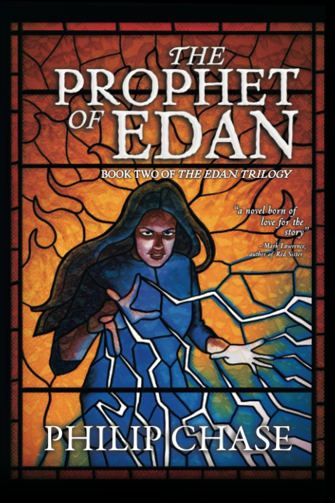

Re-Read Review
Philip Chase's The Way of Edan is a book that's hard to put down. From the first page, you're drawn into a world of mystery, adventure, and magic that keeps you turning the pages long into the night.
Read my first review, The Way of Edan by Philip Chase Book Review from October 13, 2023.
To say more on this book would be fairly redundant, however, this is an excellent book. In all parts: world building, prose, characters, and magic. All supremely enjoyable and a want to read again and again!
Philip Chase has created a world that feels real and lived-in, with a rich history and culture that adds depth to the story. The prose is elegant and evocative, drawing you into the world of Edan with its vivid descriptions and lyrical language. The characters are well-drawn and complex, with their own motivations and desires that drive the plot forward. And the magic system is unique and intriguing, adding an extra layer of mystery and wonder to the story.
Overall, The Way of Edan is a captivating read that will keep you on the edge of your seat from start to finish. If you're a fan of epic fantasy with a touch of mystery and adventure, this is a book you won't want to miss.
Some Highlights
I read The Way of Edan on my kindle, and I was really working on highlighting all I found interesting or exciting or even a plot point that seems to be important.
You may find my highlights and notes here, The Way of Edan (Highlights and Notes) by Matthew Bramer on GoodReads. Note, there might be spoilers, but the % of the book where the highlight is made, is specified; be warned.
What's Next
I am incredibly excited to continue this trilogy, soon I'll be starting... The Prophet of Edan, Book Two in The Edan Trilogy!
The Prophet of Edan, book cover